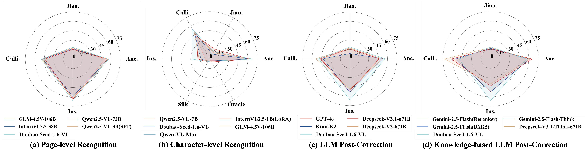

古籍
Printed and manuscript pages with dense vertical text, seals, aging paper, and page-layout cues.
AncientBook


Five historical document carriers from the Dataset collection, staged as a compact museum-style gallery.
Printed and manuscript pages with dense vertical text, seals, aging paper, and page-layout cues.
AncientBook
Calligraphy leaves with sparse ink, brush texture, varying stroke density, and open white space.
CalliBench


Stone inscription rubbings and epitaph texts with fragmented surfaces and high-contrast strokes.
Inscription


Narrow bamboo and wooden slip fragments with long vertical proportions and uneven preservation.
JianDu


Oracle-bone fragments with carved signs, broken edges, dark material texture, and sparse symbols.
Oracle


Reading Chinese historical documents across diverse carriers is central to understanding the evolution of Chinese civilization, yet remains labor-intensive and dependent on scarce expert knowledge. MCHDoc is a comprehensive benchmark for reading multi-carrier Chinese historical documents, spanning over 3,000 years and containing 15,724 high-resolution documents from six major carriers.
The benchmark mimics expert workflows through page-level recognition, character-level recognition, and LLM-based post-correction with or without external knowledge. Evaluations show that even top-tier models still struggle with heterogeneous carriers, degraded glyphs, and historically grounded correction.

MCHDoc integrates heterogeneous historical carriers and supports recognition plus post-correction evaluation.

Expert reading is not only OCR. It also requires identifying uncertain characters, consulting historical sources, and making careful corrections. MCHDoc turns that workflow into measurable model tasks.
Representative results from the poster, with best scores highlighted in cinnabar.
| Model | AncientBook | JianDu | Calligraphy | Inscription |
|---|---|---|---|---|
| Doubao-Seed-1.6-VL | 56.52 | 18.82 | 49.81 | 65.90 |
| GLM-4.5V-106B | 47.59 | 17.68 | 45.55 | 53.71 |
| Qwen2.5-VL-3B(SFT) | 52.53 | 17.09 | 54.26 | 48.44 |
| InternVL3.5-38B | 54.03 | 8.57 | 42.65 | 53.79 |
| Model | AncientBook | JianDu | Calligraphy | Inscription | Silk | Oracle |
|---|---|---|---|---|---|---|
| Qwen-VL-Max | 67.6 | 13.0 | 54.8 | 28.2 | 4.9 | 4.0 |
| GLM-4.5V-106B | 66.2 | 11.6 | 49.0 | 16.6 | 3.8 | 4.4 |
| MiniCPM-V-4.5 | 39.0 | 7.6 | 32.0 | 11.4 | 12.4 | 6.0 |
| InternVL3.5-1B(LoRA) | 62.6 | 17.6 | 40.8 | 18.6 | 5.5 | 5.6 |
| Model | AncientBook | JianDu | Calligraphy | Inscription |
|---|---|---|---|---|
| Gemini-Flash | 55.49 | 15.83 | 44.75 | 58.00 |
| Kimi-K2 | 55.39 | 16.24 | 47.25 | 59.46 |
| Deepseek-V3 | 55.39 | 17.89 | 48.93 | 62.83 |
| Deepseek-V3.1 | 55.11 | 15.46 | 44.15 | 63.80 |
| Model | AncientBook | JianDu | Calligraphy | Inscription |
|---|---|---|---|---|
| Gemini-Flash-Think | 65.64 | 15.87 | 62.16 | 42.51 |
| Kimi-K2 | 48.56 | 17.70 | 58.95 | 55.82 |
| Deepseek-V3 | 59.33 | 16.38 | 63.12 | 46.26 |
| Deepseek-V3.1-Think | 61.95 | 17.91 | 72.92 | 39.40 |

The case studies show that style, degradation, and retrieval quality jointly shape historical document reading performance.

Hard scripts: Oracle Bone, Seal, semi-cursive, and cursive writing introduce irregular structures.

Degradation: blur, occlusion, and background noise remove fine radical-level cues.

Post-correction failures: LLMs may over-correct originally valid OCR output or follow mismatched references.
MCHDoc exposes a clear gap between general MLLMs and expert-level historical document reading. Robust progress requires carrier-aware visual modeling and carefully grounded post-correction.